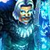

Récits Légendes de Kirin Tor Personnages Célébrités Guildes
Outils Calendrier Calendrier Illustré Mod d'interface
Informations Historiens FAQ Liens Crédits
Les légendes de Kirin Tor

==> Afficher les personnages de Yörick
Yörick
Age : 35Sexe : Homme
Race : Humain
Faction : Alliance
Formation : Guerrier
Description : Troisième fils d'une famille de basse noblesse, Yörick fût celui qui n'aurait rien à la mort de ses parents. Son premier frère, Sigmund, héritera des titres et des terres et fût éduqué en conséquance, et le second, Anatol, obtint une place de faveur dans les ordres. C'est donc afin de plaire à sa famille que Yörick s'engagea dans la guerre contre le roi liche.
Au plus fort des combats, une nouvelle lui parvint, qui brisa ses illusions... Sigmund avait épouser la femme qu'aimait Yörick en vertu du droit d'ainesse, et nul ne pouvait rien faire.
Au comble du désespoir, ses rêves brisés, sa confiance trahie, Yörick se jeta dans les flammes de la bataille à corps perdu, livrant son âme à la seul rage, la seule colère et la seule haine qu'il ressentait envers son frère, envers les hommes et envers la création toute entière.
Lors de son avènement, Arthas avait remarqué Yörick et lui proposa de devenir un chevalier de la mort. La suite est faite de sang, de pleurs et de mort, jusqu'à ce jour où la félonie d'Arthas fût dévoilée. Trompé pour la seconde fois, ses deux frères et la femme qui l'aimait morts, Yörick décida de canaliser le feu qui lui brûlait les entrailles à l'accomplissement d'une tâche ultime, laver son nom, son honneur et son âme...
Pour cela, il fît le serment de ne jamais plus lever son épée contre un innocent, ne ne jamais plus la mettre au service de ceux qui cherchent le pouvoir et la domination et de ne tuer que si c'est là l'ultime recours...
Plus d'infos sur Yörick >>>
Lire le récit de Yörick >>>